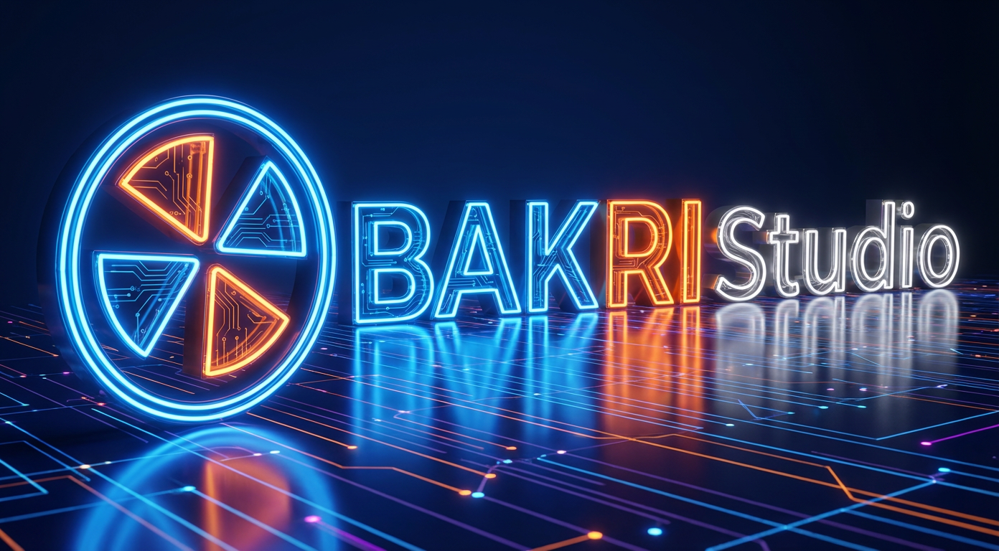

Visual Communications & Multimedia Specialist creating purposeful visual narratives through photography, videography, aerial imaging, and digital media to document missions, engage communities, and communicate with clarity and institutional impact.
Specialist in Visual Communications and Multimedia, holding an academic background in Information Technology, with hands-on expertise in photography, videography, aerial cinematography, and institutional digital communications.
I combine rigorous technical understanding with creative visual craft to produce clear, impactful content designed for field missions, institutional reporting, stakeholder engagement, and high-standard digital distribution.
Rather than presenting an inflated catalog, this portfolio highlights carefully selected real-world work demonstrating technical precision, visual composition, ethical storytelling, and reliable delivery.
Bridging systems, data tools & visual production
Respecting dignity, privacy & consent in the field
Drone, photo, video editing, motion & layout
Adaptive to institutional deadlines & field conditions

Delivering strategic visual communications from conceptual planning to final delivery for organizations, missions, and professional initiatives.
Documentation of institutional events, humanitarian field operations, editorial features, and dignified human-interest portraits.
End-to-end video creation—from shot planning and on-location filming to editing, color grading, sound design, and master delivery.
Cinematic aerial videography and high-elevation surveys capturing scale, architectural landscapes, and spatial context safely and smoothly.
Translating complex institutional objectives, field activities, and community impact into coherent, emotionally resonant visual narratives.
Creating responsive, platform-tailored digital assets engineered to communicate key messages clearly to diverse audiences.
Structuring information visually through editorial layout, publication covers, typography, brand alignment, and clear infographic assets.
Three featured aerial productions highlighting flight dynamics, cinematic framing, spatial composition, and comprehensive post-production.
A verified collection of visual documentation, photography, videography, and graphic communication.
Photography and film are not merely aesthetic exercises—they are strategic tools to inform, advocate, and document institutional impact.
Providing verified, transparent visual records that substantiate project progress and donor investments.
Portraying beneficiaries, communities, and partners with respect, agency, and contextual truth.
Producing assets engineered to seamlessly serve annual reports, donor briefs, social campaigns, and press releases.
"Visual excellence in institutional and humanitarian media is meaningless without respect for human dignity, contextual honesty, and strict adherence to informed consent. I treat every camera assignment as a position of ethical trust."
Experienced with brand books, UN/NGO visibility standards, terminology rules, and publication requirements.
Prepared for rapid travel, variable field conditions, heat, and working alongside multidisciplinary teams.
Reliable workflows for same-day event stills, fast-track press cuts, and prompt media package dispatch.
Proper EXIF/IPTC metadata tagging, captioning, categorization, and secure cloud/local repository archiving.
A balanced profile uniting formal IT education with professional visual craftsmanship.
Holding a Bachelor of Science in Information Technology provides me with a rare edge in visual communications. I understand digital asset management, network workflows, data visualization, web architecture, and secure cloud storage—ensuring smooth collaboration with IT, comms, and program teams alike.
Verified background in media production, institutional visual documentation, and digital communications.
Providing tailored photography, videography, aerial documentation, and digital content packages for organizations, corporate bodies, and development initiatives. Responsible for end-to-end production, ethical clearance, and asset delivery.
Directed video editing, post-production workflows, graphic collateral, and motion graphics. Supervised audio-visual quality control and multi-format delivery across web and broadcast specifications.
Supported information systems, digital asset databases, and web-ready content publishing. Leveraged IT background to streamline media archiving and digital distribution workflows.
For comprehensive details on professional history, academic background, technical proficiencies, and verified references, download the English CV prepared for international agencies and institutions.
Available for consultancy assignments, field photo/video missions, institutional documentation contracts, and full-time communications roles.